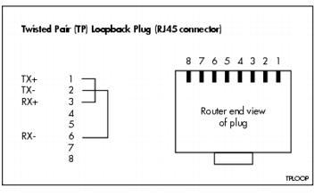
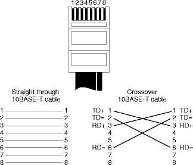

Troubleshooting - Basic
This appendix contains some frequently asked questions about troubleshooting licensing.
Q. How should my network topology be?
Ans: You should not have an overly congested network or one with too much delay. Both of these can cause "heartbeat" and other failures.
Q. Should my license server be a dedicated machine?
Ans: For maximum performance, and on sites with a large number of users, the license server should be a DEDICATED machine.
Q. Can license files be combined?
Ans: While it is technically possible to combine FLEXlm-based license files, there are a few disadvantages to this approach:
There is a performance degradation associated with large license files.
It makes debugging difficult as it is difficult to trace the origin of the problem.
Therefore, it is suggested that you maintain separate license files for each daemon and run multiple
lmgrddaemons (one for each vendor daemon).Q. Why are some FEATURES in the license file rejected when the server is started?
Ans: The license server accepts only valid FEATURE lines. A FEATURE line is considered valid when:
the start_date is less than the date the server is started or re-read
date has not expired
the 20-character encryption code is valid
Q. Are duplicated FEATURE lines allowed?
Ans: Cadence allows multiple lines for a FEATURE that has the start date already enabled. However, the behavior is different for temporary and permanent keys.
All temporary keys are allowed.
All permanent keys with the same start date are allowed.
If there are multiple sets of permanent keys having different start dates, only the set with the latest enabled start_date is allowed.
Q: What does the UNSUPPORTED line in the log file mean?
Ans: It is very important that the FEATURE lines be consistent in both the application client and the license server versions of the license file (which may be different for a variety of reasons). The UNSUPPORTED line in the log file is most likely due to a mis-match in these two license files. Usually, a license if available is granted.
Note: It is possible that an UNSUPPORTED line in the log file is immediately followed by an OUT line.
Q. The server is fine. What else could be causing the problem?
Ans: It is possible that the license server is fine, but the application is causing the problem. You can access the internal testability code of the application. This code appends information representing version, search path, actions, run times, results, and other diagnostics to a specified file.
To access this testability code, execute the following at the command prompt (in UNIX):
- setenv CDS_LIC_QA_TesT /tmp/client_debug_log.out
Q. How can I reclaim a license if it has been lying idle for some time?
Ans: You can use the TIMEOUT option in the options file to reclaim the license when the product has been idle for sometime.
Q: What configurations are supported with the fault-tolerant server setup?
Ans: Only homogeneous platforms of the same OS release are supported. For example, all three servers in a fault-tolerant configuration must be Sun/SunOS 4.1.3 machines.
Q: I have a license file with both node-locked and floating licenses. Why are the reservations I specified in the options file not working correctly?
Ans: Normally, the node-locked lines appear first in the license file because they should be given out before any floating licenses. This is important to avoid the situation where locked nodes take all the floating licenses and other machines fail to get any of the licenses. The drawback with this setup is that if the node-locked lines appear in the license file first, those are the lines on which the server applies the specified reservation (or other options). Any option you specify will only be applied to the first line of the FEATURE in the license file. However, what is required is that options should be applied to the floating licenses, and not the node-locked licenses. This is not an unresolvable problem, because the options are applied by the license server, and licenses are checked out as requested by the clients. You need to do have the server machine use a modified license file in which the floating lines appear first and node-locked lines last, and have the clients use the normal file that has the node-locked lines first and the floating lines last. This results in the server applying any options to the floating lines (since those appear first in its version of the license file), and clients correctly checking out the node-locked licenses first (if they are the locked node).
Q. What do I do to make a standalone machine work as a license server? (Applicable for Linux and Windows)
Ans: The first thing to check is whether you can
pingthe machine that is supposed to be the server. If not, then that is the first thing to correct. Even in a single machine configuration, licenses require a working TCP/IP infrastructure, implying working hardware, name mapping, IP addresses, and so on.First, ensure that the hardware is enabled. The hardware solution is to make a simple loop back plug (one that routes the transmit to the receive). The Ethernet will interpret this as being connected.
 Ethernet twisted pair loopback plug
From looking at a diagram of a crossover cable, you can see which pin is which:
 Straight-through and Crossover Cable Pinouts
If you do not fix this, you will see the
lmhostidcommand returning a null value or "FFFFFFFFFFFF" for the host ID of the machine. See the example below where thelmhostidwas run with attaching the loopback plug.
The FLEXlm host ID of this machine is ""After the loopback plug was attached,
lmhostidreturned the following:
The FLEXlm host ID of this machine is "0010a48977a0"There is a software alternative as well. On Windows, there is a registry hack. You can find the information in the Microsoft knowledge base. However, it is recomended that you use the hardware solution.
On Linux, open the
/etc/modules.conffile and find out which module (or driver) is aliased to theeth0interface. It might be something like aneepro100. Edit your/etc/init.d/networkscript and insert the equivalent of the following line just after the"start)"line:This will load the module for your ethernet device regardless of whether you are connected to a working network.
Once the connectivity between the hardware and the OS is established, you have to make sure that the name resolution happens correctly. Since by default, there should be a
hostfile that maps the IP addresses to the names, andlocalhostis a default name that should always be mapped, you can use that as thehostnamefor the license file (and the setting of the ENV variables to find the server).If you do not want to use localhost, then make sure that the
/etc/hostsfile on Linux (and thehostsfile on Windows) has the information required to add the name of your machine to the loopback (127.0.0.1) address mapping.Finally, set the
CDS_LIC_FILEenvironment variable to5280@127.0.0.1or5280@localhost.
More information on troubleshooting is available at:
For support, see http://www.cadence.com/support
or try Cadence's SourceLink service.
Copyright © 2004, Cadence Design Systems, Inc.
All rights reserved.
Legal notices and trademark attributions